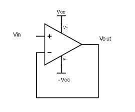
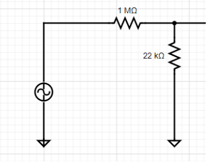
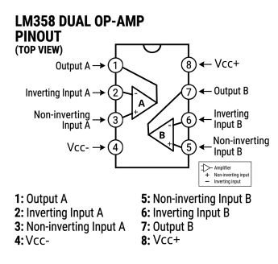
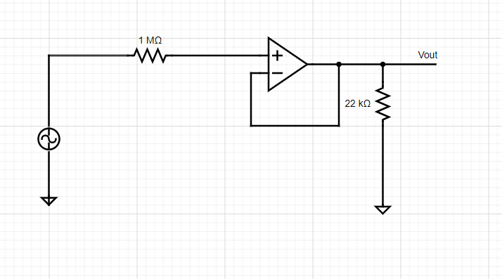
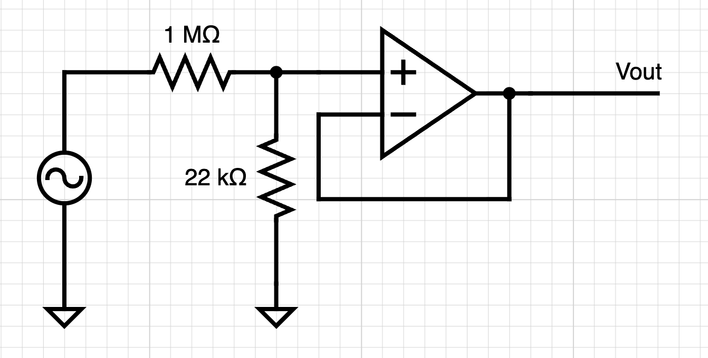
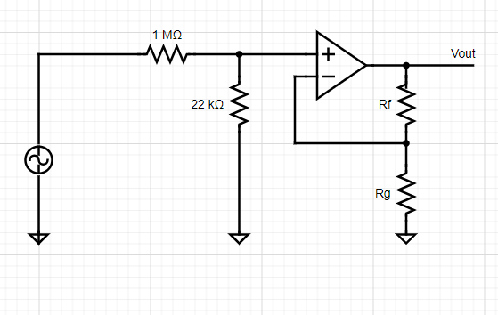

Part 3 - Voltage followers and input impedance
A common way to produce a large input impedance in electronics is using the following circuit:

This circuit is called a voltage follower or voltage buffer. It is an op-amp with its output connected to its negative input. In this circuit, \(V_{out\ } = V_{in}\). As the input pins of the opamp do not draw current, you have a way of monitoring the input voltage without affecting it. In practice, however, when you have very fast changes of \(V_{in}\), \(V_{out}\) might not be able to follow immediately (because of the capacitances in the circuit). This characteristic of an opamp is its bandwidth. An op amp's bandwidth is the widest (it is capable of following the fastest signals) when its gain is lowest (when it is used as a follower).
Exercise 3-1 - Build a voltage divider, connected to your sine wave source with \(R_{s}\ = \ 1\ MOhm\) and \(R_{sh}\ = \ 22\ kOhm\) (see circuit below).

- What happens to Vout when you disconnect \(R_{sh}\)?
Next, you will add a voltage buffer between \(R_{s}\) and \(R_{sh}\) (see circuit below). To do this, you will need to use an op-amp. We will use LM358AN/LM358AP (you can google the datasheet). It's not the best op-amp, it's not the worst. But it's certainly one of the cheapest. It's also really forgiving -- it allows large voltage rails and is stable with poorly regulated power supplies.
- If you were using a more finicky op-amp that required really stable voltage rails, how might you do that? (Hint: which passive circuit element acts like a little battery that resists changes in voltage?)
To generate the positive and negative power supply voltage for the op-amp, you will use two variable DC power supplies to power your op-amp (or one dual supply).
Make sure you look at the op-amp datasheet for the proper range of dc supply voltage and polarity. (It's max = 32 V).
The following diagram is an overhead view of the LM358 with its pins labeled. Use this as a map when making connections on your breadboard. Note the orientation of the notch at the top of the diagram with respect to the pin positions.

Now, go forth and place a voltage follower between the \(1\ MOhm\) \(R_{s}\) resistor and the \(22\ kOhm\) \(R_{sh}\) resistor on the breadboard:

-
Now, what happens to Vout when you disconnect \(R_{sh}\)? And when you put a low resistance (\~\(1\ kOhm\)) instead?
-
Is this circuit amplifying the signal?
-
Bonus: The op-amp's inputs have very high input impedance. In the above circuit, calculate the peak current flowing through the \(22\ kOhm\) resistor. Where is this current coming from? What voltage would be required to generate this current without the op-amp? Would this be possible using passive elements?
-
Bonus 2: Would anything change if we use a \(Rf\ = \ 1\ kOhm\) as a feedback resistor in the feedback connection of the voltage follower?
Exercise 3-2
Move the \(22\ kOhm\) resistor to the input side of the op-amp.

- What is the attenuation imposed by the resistor divider?
Remember that the gain of a non-inverting feedback network is given by \(k\ = 1 + \ \frac{R_{f}}{R_{g}}\) . Get a couple of resistors with values between \(1\ kOhm\) and \(100\ kOhm\) that allow you to approximately (within 10%) undo the attenuation that is imposed on the input signal by the \(\frac{1\ MOhm}{22\ kOhm}\) resistor divider to recover your input waveform.

- What values did you choose for \(R_{f}\) and \(R_{g}\)? What is the calculated gain?
- Bonus: Why is trying to exactly undo the attenuation a fool's errand (Hint: think about whether or not your resistors have exactly the resistance they claim to have)